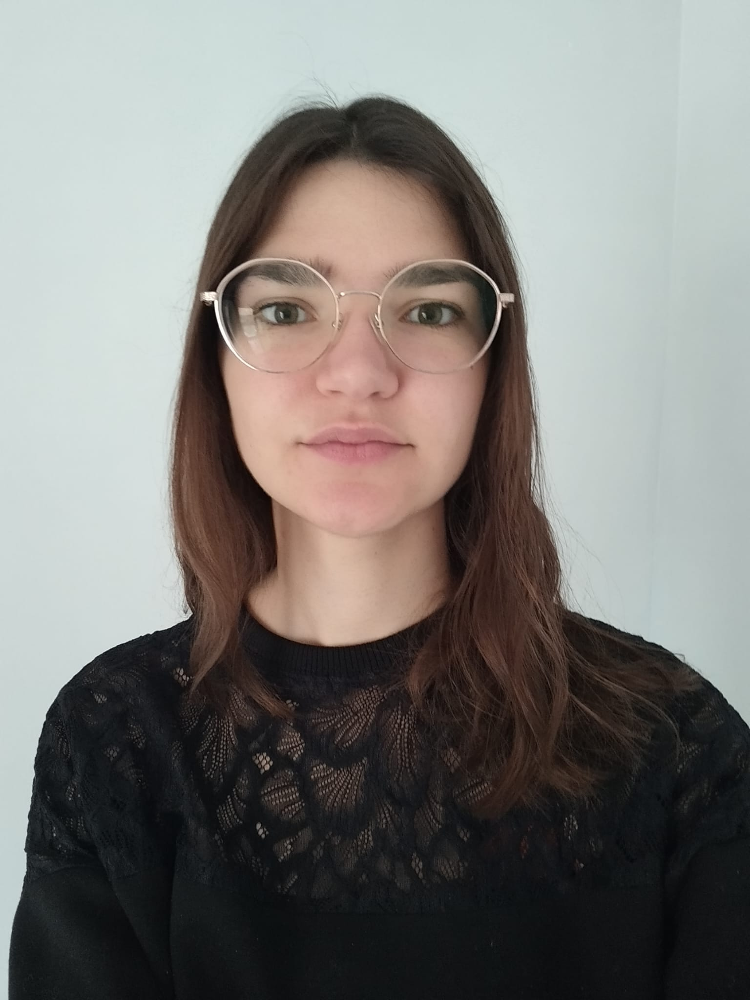

Étudiante en École d'Ingénieurs à SeaTech Toulon — Parcours Modélisation Calculs Fluides & Structures (MOCA)
Actuellement étudiante en école d'ingénieur à SeaTech, je me spécialise en mécanique des fluides numérique (CFD). Passionnée par l'hydrodynamique, l'architecture navale et la modélisation, j'aime combiner rigueur scientifique et esprit d'équipe pour résoudre des problèmes complexes.
Stage de deuxième année focalisé sur l'étude des propriétés et des mécaniques de la glace en milieu arctique.
Modélisation et simulation numérique à l'aide de Hydro3d et openFOAM. Ce projet visait à analyser le comportement hydrodynamique de la carène en conditions de haute vitesse.
Stage de première année : participation à la construction d'un vaisseau du XVIIe siècle. Aide aux charpentiers de marine via des techniques traditionnelles de travail du bois et d'assemblage structurel.
Étude expérimentale et analyse de l'impact d'un brise-lames sur la houle au sein d'un bassin à vagues.
Analyse de la stabilité via modélisation physique, tests réels en mer et simulations numériques sous Python. Mise en évidence de l'impact de la hauteur du centre de gravité sur l'équilibre.
Matières clés : Modélisation mathématique, mécanique des solides et des fluides visqueux, méthodes numériques, calcul de structures (Éléments Finis), hydrodynamique, langage C++.
Options : Architecture navale et modélisation 3D avec RHINO.
Semestre d'études à l'Université norvégienne de sciences et de technologie.
Programme intensif de préparation aux concours des grandes écoles d'ingénieurs. Matières principales : Physique, Mathématiques, Chimie, Sciences de l'Ingénieur.
Obtenu avec mention très bien avec felicitations du jury.
Python, Fortran, OpenFOAM, Flow3D, ABAQUS, MATLAB, Rhino 3D, VS Code, Jupyter, Emacs
Patience, Organisation, Esprit stratégique, Motivation intrinsèque
Impliquée dans deux associations de l'école :
YUSHCHENKO Lyudmyla — Université de Toulon
📞 +33 (0)4 94 14 67 28 | ✉️ lyudmyla.yushchenko@univ-tln.fr